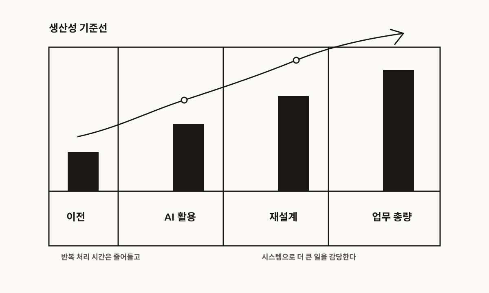

No. 004
생산성이 높아진 사회에서 경쟁력을 갖는다는 것
AI는 업무를 조금 편하게 만드는 도구를 넘어, 한 사람이 해낼 수 있는 일의 기준선을 다시 올리고 있다.
우리는 AI를 활용해 이전보다 훨씬 많은 일을 해낼 수 있게 되었다. 자료를 찾고, 글을 쓰고, 데이터를 정리하고, 아이디어를 빠르게 검토하는 과정에서 AI는 이미 업무 속도를 크게 끌어올리고 있다. 예전에는 하루 종일 붙잡고 있어야 했던 일도 이제는 몇 시간 안에 초안을 만들고, 방향을 잡고, 다음 단계로 넘길 수 있다.
이 변화는 단순히 일이 편해졌다는 의미가 아니다. 사회 전체의 생산성 기준선이 올라가고 있다는 뜻에 가깝다.

과거에는 한 사람이 하루에 처리할 수 있는 업무량이 어느 정도 정해져 있었다. 자료 조사, 정리, 기획, 실행, 검토까지 모두 사람의 시간과 손을 거쳐야 했기 때문이다. 하지만 AI가 업무 과정에 들어오면서 한 사람이 다룰 수 있는 일의 범위가 넓어지고 있다. 더 많은 안을 만들 수 있고, 더 빠르게 비교할 수 있으며, 더 짧은 시간 안에 결과물을 만들어낼 수 있다.
그렇다면 이런 생산성이 늘어나고 있는 사회에서 경쟁력을 가지려면 무엇이 필요할까.
첫 번째는 AI를 단순히 편의 도구로 쓰는 것이 아니라, 자신의 업무 처리량을 확장하는 도구로 받아들이는 것이다. AI가 대신 초안을 만들고 정리해주는 것에 만족하는 것이 아니라, 그 덕분에 확보된 시간과 사고의 여유를 더 많은 시도와 더 높은 수준의 판단에 써야 한다. 같은 시간 안에 더 많은 경우의 수를 검토하고, 더 빠르게 실행하고, 더 자주 개선할 수 있어야 한다.
두 번째는 1인당 해낼 수 있는 업무의 총량을 늘리는 것이다. 여기서 말하는 총량은 단순히 더 오래 일하거나 더 많은 일을 떠안는다는 뜻이 아니다. 반복적이고 시간이 많이 드는 작업을 AI로 압축하고, 사람은 더 큰 단위의 문제를 다룰 수 있어야 한다는 뜻이다. 과거에는 한 사람이 하나의 업무 흐름만 겨우 담당했다면, 앞으로는 한 사람이 여러 흐름을 동시에 설계하고 관리할 수 있어야 한다.
세 번째는 판단력이다. AI가 생산 속도를 높일수록, 사람에게 더 중요해지는 것은 무엇을 만들지, 어떤 방향으로 갈지, 어떤 결과가 더 좋은지 판단하는 능력이다. 결과물을 빠르게 만드는 사람은 많아질 수 있다. 하지만 그 결과물이 왜 필요한지, 어떤 맥락에서 의미가 있는지, 무엇을 우선해야 하는지 판단하는 사람은 여전히 중요하다.
결국 AI 시대의 경쟁력은 AI를 잘 쓰는 능력에만 있지 않다. AI로 올라간 생산성을 자기 업무 구조 안에 흡수하고, 그만큼 더 넓은 범위의 일을 감당할 수 있는 사람에게 있다.
더 빨리 끝내는 사람이 아니라, 더 큰 단위의 일을 설계하고 끝까지 가져갈 수 있는 사람이 경쟁력을 갖게 될 것이다. 앞으로의 질문은 "AI가 내 일을 얼마나 줄여줄까?"가 아닐 수 있다.
AI로 높아진 생산성을 바탕으로, 나는 얼마나 더 큰 일을 다룰 수 있을까?
생산성이 늘어나는 사회에서는 기존의 1인분 기준도 함께 바뀐다. 이전과 같은 방식으로 일하면서 AI만 보조적으로 쓰는 사람과, AI를 전제로 일의 구조 자체를 다시 짜는 사람 사이에는 점점 더 큰 차이가 생길 것이다. 경쟁력은 바로 그 지점에서 만들어진다.